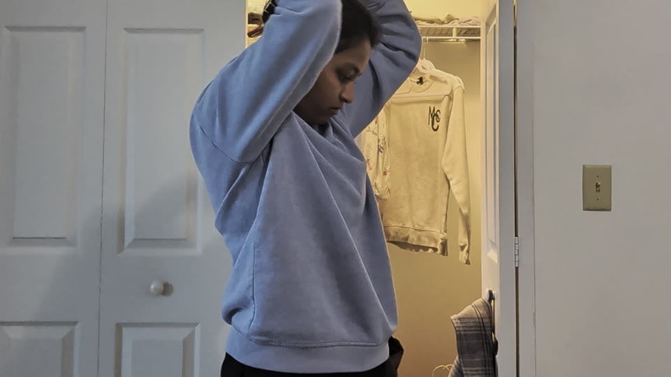
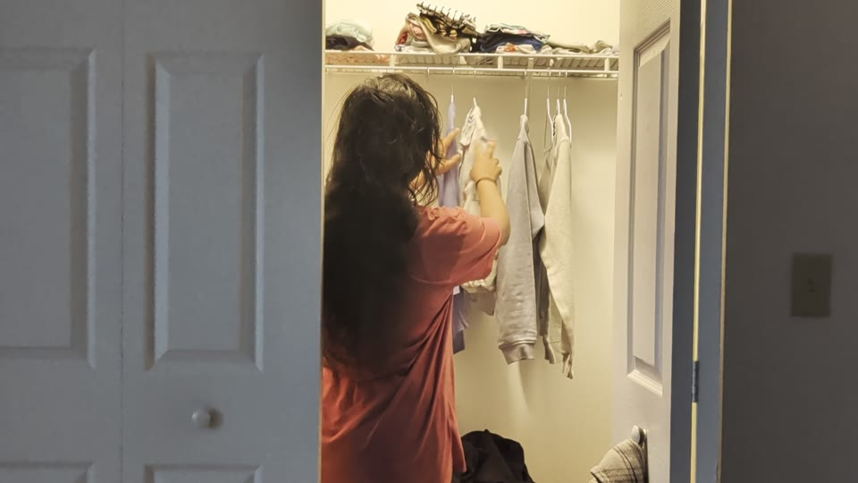
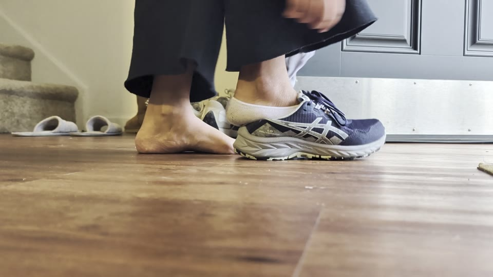
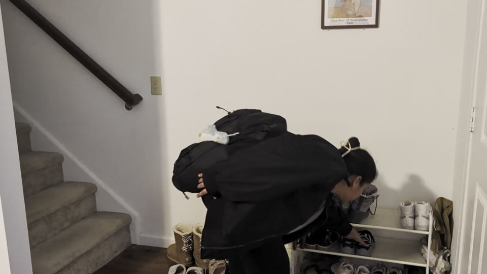
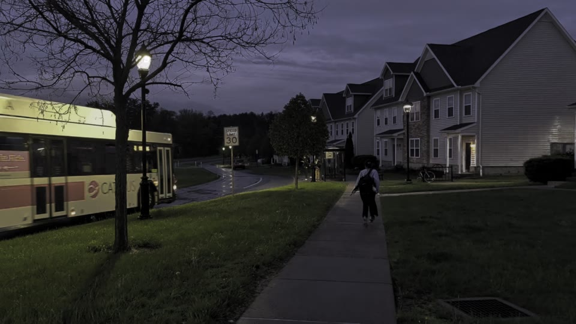
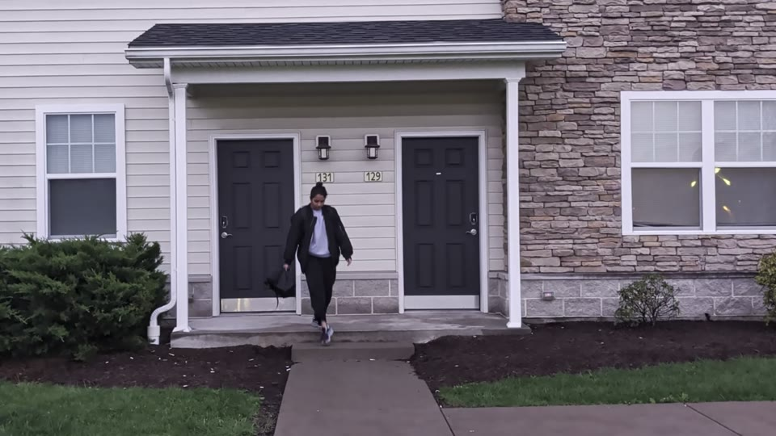
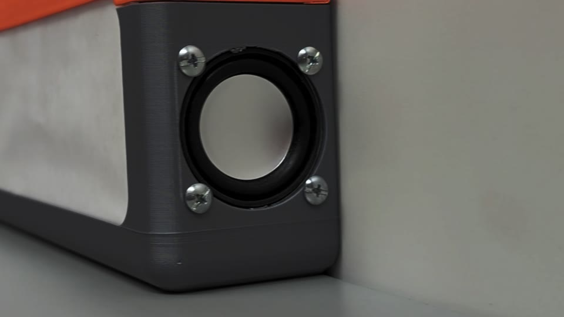

Film project · Solo production
Aurora Pitch Film
Same person. Same morning. Different story.
About 2 minutes · landscape · sound on
My role
One person, nearly every job
The film was the product communication for Aurora, and I made almost all of it myself. It became a design project of its own: the story had to explain a new kind of product in two minutes with almost no narration.
Context
Made for Aurora, the connected wellness product from EDSGN 467 (Spring 2026). The product page covers the hardware and the app interface I designed. This page is about the film.
The idea
Tell the same morning twice
Sunrise lamps are easy to describe and hard to feel. Instead of listing features, the script shows one person's morning twice. Take one is a phone alarm, a rushed montage and a cold walk to work. Take two repeats the same bedroom, the same shots and the same street, but starts with light.
Because the two takes share locations and framing, the viewer compares them without being told to.
Structure
- The bad morningPhone alarm, snooze, scroll, panic, a rushed montage, then a freeze on a shivering walk to work.
- The rewindA short pause, one question, and a speed-ramped rewind back to the opening shot.
- The good morning, then the productLight creeps across a face, the same routine plays calmly, then the product is shown on its own.
Mirrored shots
Same spaces, different energy






Design decisions
What the script set up
- Pacing carries the stress. The rushed montage has no narration; fast, handheld cuts and sound do the work.
- One silent beat. The frame freezes and the sound drops before the one question, "What if you started yours differently?"
- The light is a mystery first. The glow appears on a face before the product, so the audience asks what it is before it is answered.
- The product speaks last. The sunrise has no narration, and the showcase covers dawn, sound and ambient mode, ending with the product alone on the wall.
The product, on screen


Stills from the film's showcase section.